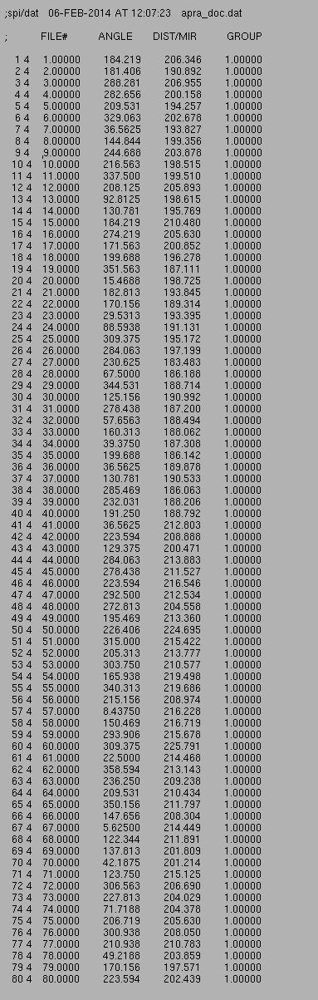

(80 Images)

| .OPERATION: | AP RA | ; Rotational alignment |
| .INPUT FILE TEMPLATE: | sav_face_rtsh_stk@*** | ; Image name template (input) |
| .FILE NUMBERS OR SELECTION DOC. FILE NAME: | 1-80 | ; List of images |
| .FIRST, LAST RING & RING STEP: | 5,29 | ; Full circle |
| .ANALYZE FULL OR HALF RING: | Full | ; First, last ring, ring skip, |
| .ALIGNMENT DOC FILE: | apra_doc | ; Alignment doc file (output) |
| EXP. INPUT IMAGES (80 Images) |
|---|
|
| sav_face_rtsh_stk_mon |
| OUTPUT ALIGNMENT DOCUMENT FILE |
|---|
|  |
| apra_doc |